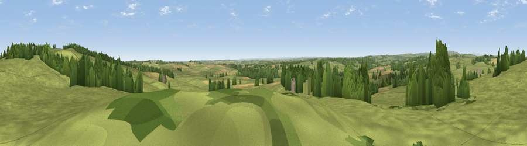

Viewpoint near Longhorsley
#14771 in England · top 40% of its area beats it · near LonghorsleyWhere it is
The exact computed spot (NZ 13425 90425). Click the marker for map links.
The view, rendered

A 360° render of this exact spot computed from the terrain model, tree cover and land cover — summer colours, afternoon light, calibrated against photographs of famous viewpoints. Real trees, hedges and buildings will differ in detail.
The panorama
Grey silhouette: terrain skyline in each direction (720 bearings, Earth curvature and refraction included). Dashed green: skyline with trees (+15 m) and buildings (+8 m) as obstacles. Blue strip: how far the ground is visible on each bearing.
Where the view opens
Wedge length = distance to the farthest visible ground on that bearing (vegetation-aware). Rings at 10, 25 and 50 km.
What fills the view
81% grassland · 11% woodland · 7% cropland
Angular shares of the visible panorama (visual magnitude), not map area. Landscape diversity 0.28 (0–1 Shannon).
Key numbers
More beautiful places nearby
The staircase of upgrades: each row has a higher view potential than everything closer. Driving times are estimates from straight-line distance, calibrated against real road routing — check an actual route before setting out.
| Place | Direction | Drive | Score |
|---|---|---|---|
| Viewpoint near Longhorsley | NE · 1 km | ~4 min | 61.2 |
| Viewpoint near Longhorsley | N · 6 km | ~13 min | 65.5 |
| Viewpoint near Nunnykirk | WNW · 8 km | ~16 min | 66.0 |
| Rothley Crags | W · 9 km | ~18 min | 66.3 |
| Viewpoint near Nunnykirk | W · 10 km | ~20 min | 67.9 |
| Garleigh Hill | NW · 11 km | ~21 min | 73.4 |
| Viewpoint near Rothbury | NW · 12 km | ~23 min | 81.1 |
| Dove Crag | NW · 13 km | ~23 min | 82.3 |
55.20790, -1.79059 · source: screening · position refined by local search. Computed location — check access rights before visiting.